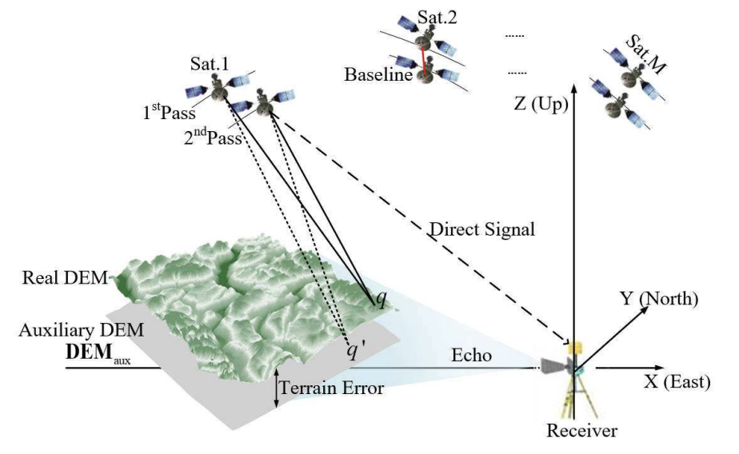
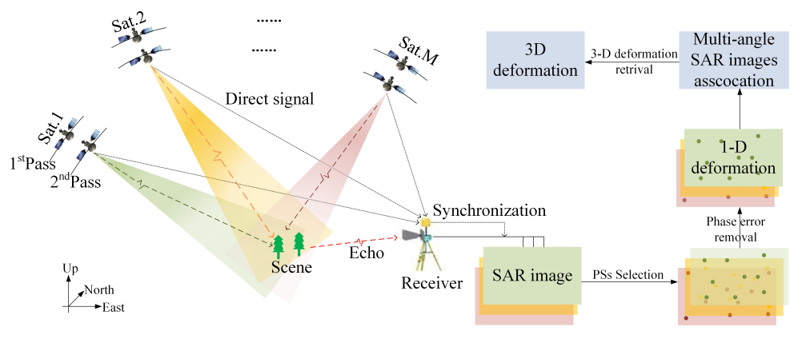

May 15, 2026
Reported at the Academic Conference on Radar Interferometry in Chengdu and received the Excellent Conference Presentation Award (5%) 🎉.
I am a third-year Ph.D. student at the Beijing Institute of Technology supervised by Prof. Feifeng Liu. Previously, I received my B.S. degree from electronic information engineering at JiLin University in 2022.
My research interests include change detection technology based on global navigation satellite system-based SAR interferometry systems, particularly in:
💌 Please feel free to contact me if you would like to explore potential discussions or collaborations.
Reported at the Academic Conference on Radar Interferometry in Chengdu and received the Excellent Conference Presentation Award (5%) 🎉.
Reported at the International Radar Conference in Jiaxing and received the Excellent Paper Award (10%) 🎉.
One paper accepted at Transactions on Geoscience & Remote Sensing 2025.
One paper accepted at Transactions on Geoscience & Remote Sensing 2024.
Awarded the National Scholarship (1%) in 2021 ✨.

IEEE Transactions on Geoscience and Remote Sensing 2025

IEEE Transactions on Geoscience and Remote Sensing 2024